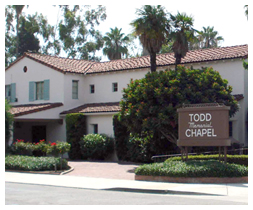
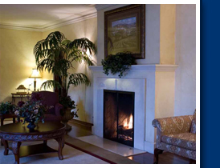
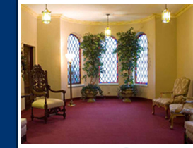

Whether you need help today or you are planning for the future, we walk you through every option with no pressure and no judgment.
A traditional funeral service typically includes a visitation followed by a ceremony at our chapel or a church of your family's choosing. This may be combined with a graveside or cryptside service at the cemetery for the committal.
We coordinate with clergy of every faith, with cemeteries throughout the area, and with traditions our family has been honoring since 1907 — Catholic Mass, Christian service, Jewish tradition, military honors, and family-led services without any religious component.
Begin Arrangements

A graveside or cryptside service is held entirely at the cemetery — appropriate when the family wants a more intimate gathering, when traditions call for it, or when the immediate family is small and prefers a simpler farewell.
We coordinate every detail: cemetery arrangements, casket or urn transportation, clergy, military honors, flowers, and the order of service. The committal is meaningful, dignified, and entirely tailored to your family.
Request a Graveside ServiceCremation does not have to mean a service is skipped. Here are the three options most families consider — and we walk you through each one without rushing.
The simplest option. We handle removal, all paperwork, and the cremation itself. Ashes are returned to your family in a temporary container or your chosen urn — no formal service is held.
See pricingAn immediate family viewing prior to cremation. Honors traditions where seeing a loved one one final time matters, while keeping the simplicity of cremation afterward.
See pricingA full memorial service before or after the cremation, at our chapel, a church, or a venue meaningful to your family. Often paired with a celebration of life gathering.
See pricingA casket is not required for any cremation option, unless a viewing precedes the service.
When a loved one needs to be transported to or from another state — or another country — we handle every detail. Receiving funeral home coordination, all required paperwork, and consulate permits when crossing borders.
Whether your loved one was born somewhere far from home and must return, or whether your family will hold the service somewhere else, we have shipped for families across the country and around the world. We know the process, and we walk you through every step.
Discuss Transportation
Pre-planning is the most loving thing you can do for the people you love. We sit with you, walk you through every option, and lock in today's prices — no pressure, no salesmanship, just an honest conversation. You can do this in our chapel, in your home, or by phone.
Request a Pre-Planning ConversationEverything your family may need before, during, or after a service.
The form we use to gather the information needed for the death certificate. You can complete it in our office, or at home if that is easier.
Request the form →See all visitations, services, and Masses scheduled at our chapel and at area churches in the coming weeks.
View scheduled services →The full FTC-required itemized price list for every service we offer — burial, cremation, memorial, transportation.
View price list →VA burial benefits, Social Security survivor support, and the paperwork no one else explains.
Learn more →A real person. Any hour. No pressure.